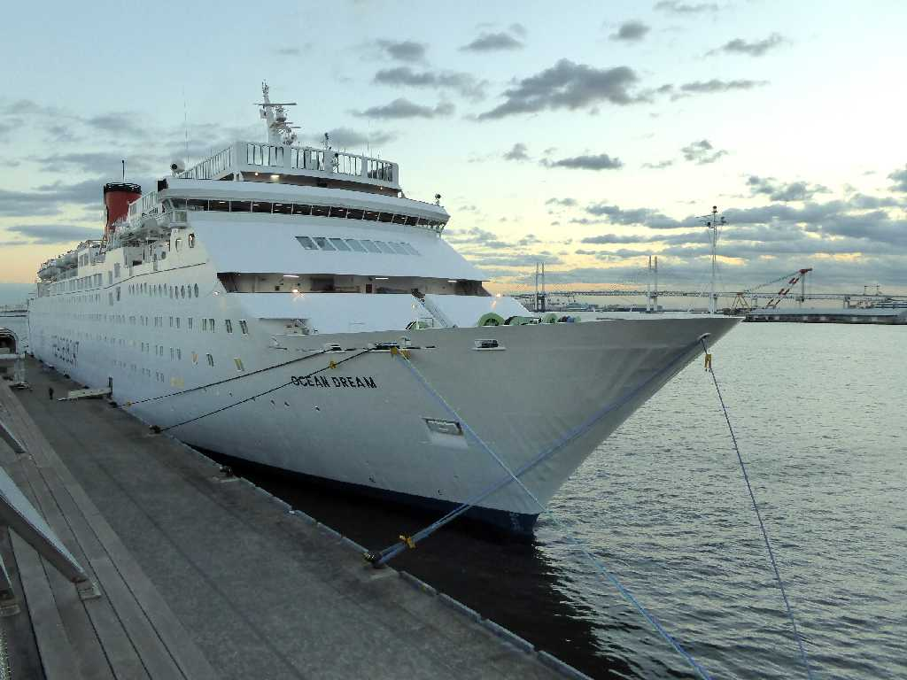
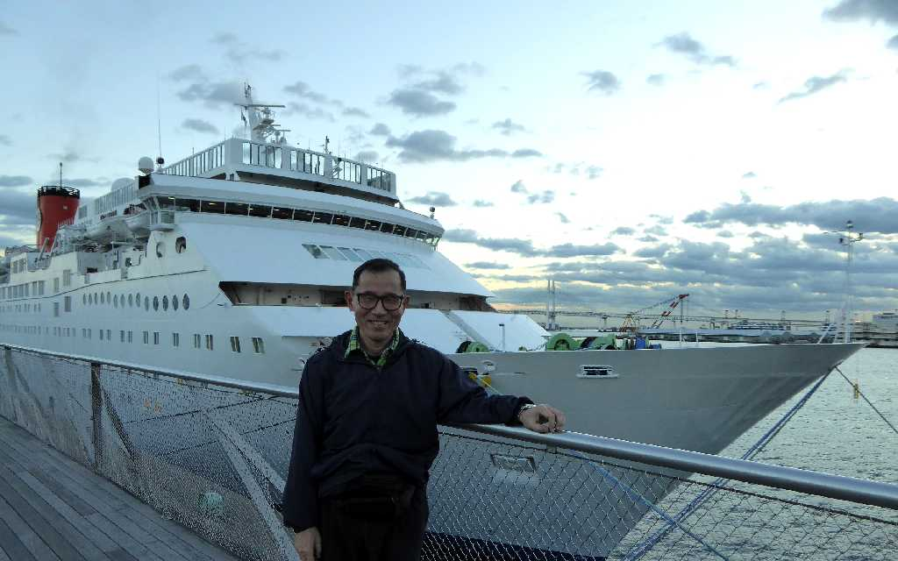
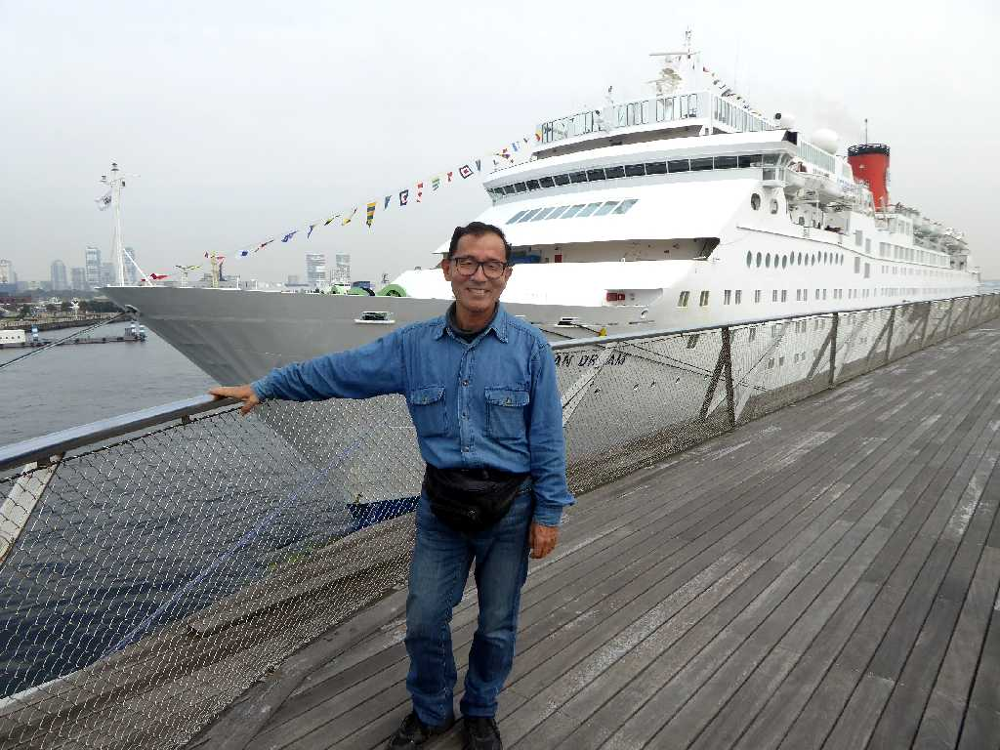

Ocean Dream Yokohama Port Yokohama
クルーズ船オーシャンドリーム号で世界一周の船旅１０５日間に出発する

December 17 2015 Ocean Dream Yokohama Port
世界一周の船旅８０日間以来５年ぶりの船旅で今回はスエズ運河パナマ運河を通らず南半球を巡る５万キロ余りの長旅となる
Ocean Dream Yokohama Bay Bridge Yokohama Port
横浜ベイブリッジを通り那覇に向け出港

March 30 2016 Ocean Dream Yokohama Port
地球一周の船旅出港１０５日目５１,５１１ｋｍ航行し遂に横浜港大桟橋に着岸し南半球クルーズの旅が完結